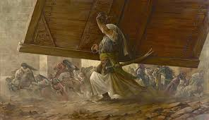
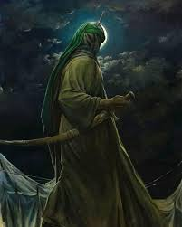
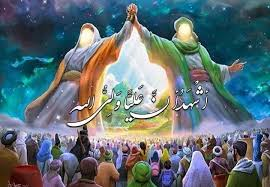
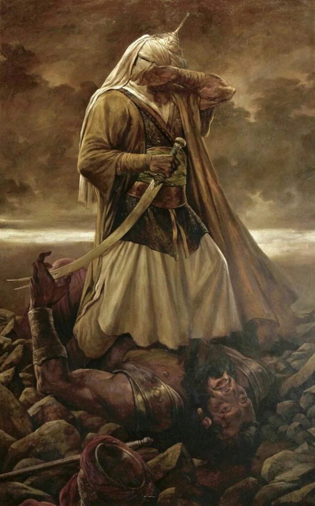
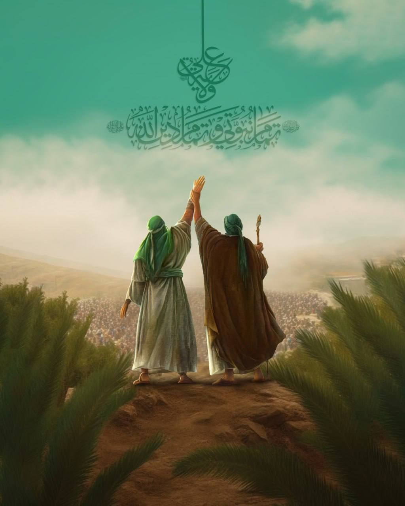
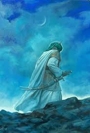
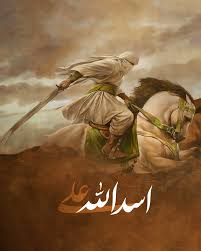

Haq Haider
Maula ali as

ALI IBN ABI TALIB
Ali ibn Abi Talib (علي بن أبي طالب) was the cousin and son-in-law of Prophet Muhammad ﷺ, born inside the Kaaba on the 13th of Rajab. Raised in the Prophet’s household, he was the first male to embrace Islam and remained a devoted supporter throughout his life. He married Fatimah al-Zahra (AS) and was the father of Hasan (AS) and Husayn (AS).
Ali (AS) was renowned for his wisdom, bravery, and deep knowledge. He played a key role in major battles like Badr, Uhud, Khandaq, and Khaybar, where he famously lifted the fortress gate. His sermons and sayings are preserved in Nahjul Balagha, showcasing his intellect and philosophy.
As a ruler, he upheld justice, humility, and righteousness. He was martyred in Masjid Kufa while in prayer, his last words being, "I have succeeded, by the Lord of the Kaaba!" His legacy of faith, sacrifice, and wisdom continues to inspire generations.



لَا فَتَىٰ إِلَّا عَلِيٌّ لَا سَيْفَ إِلَّا ذُو ٱلْفِقَارِ




NAJAF-IRAQ
Sermon of Ghadeer - Wilayat e Ali
Arrival at Ghadeer Khumm
After completing the farewell Hajj in 632 CE, Prophet Muhammad ﷺ and thousands of companions stopped at Ghadeer Khumm, an important crossroad near Juhfa. It was a scorching hot day, yet the Prophet ordered the entire caravan to halt.
The reason? A divine command had just been revealed: “O Messenger, proclaim what has been sent down to you from your Lord…” (Quran 5:67) This moment would define the future leadership of the Muslim Ummah.
The Historic Declaration
The Prophet ﷺ stood on a makeshift pulpit of camel saddles and delivered a long sermon. He reminded the people: "Do I not have more authority over you than your own selves?" The crowd replied: "Yes, O Messenger of Allah!"
Then came the pivotal moment: “Whomever I am his Mawla (guardian, leader), then Ali is his Mawla.”
This was a public declaration of Imam Ali (AS) as his successor.
Divine Confirmation
As soon as the Prophet ﷺ made the announcement, a verse of the Quran was revealed:
“This day, I have perfected for you your religion and completed My favor upon you, and have approved for you Islam as your religion.” (Quran 5:3)
This verse confirmed that the religion of Islam had been completed with Imam Ali’s (AS) appointment.
The Oath of Allegiance
The Prophet ﷺ then asked everyone to come forward and pledge allegiance to Imam Ali (AS). The first to do so was Umar ibn Khattab, who congratulated Ali, saying:
“Congratulations, O Ali! You have now become the Mawla of every believing man and woman.”
Thousands followed, one by one, acknowledging Imam Ali’s (AS) role as their leader and guide.
The Lasting Significance
The event of Ghadeer Khumm is not just a historical moment; it holds immense spiritual, political, and social significance.
- -It established leadership (Wilayah) as an essential part of Islam.
- -It demonstrated the Prophet’s commitment to guidance even after his passing.
- -It remains a central part of Islamic teachings and is celebrated as "Eid al-Ghadeer" annually.
Imam Ali’s (AS) leadership was based on justice, knowledge, and faith, principles that continue to inspire millions today.
Imam Ali: The Epitome of Wisdom and Justice
Imam Ali (AS), the cousin and son-in-law of Prophet Muhammad (PBUH), was known for his unparalleled wisdom, bravery, and devotion to justice. His legacy continues to inspire people worldwide, guiding them toward truth and righteousness.
Timeless Words for Imam Ali
"Your guardian is only Allah, His Messenger, and those who establish prayer and give zakat while bowing [in prayer]. (Quran 5:55)"
"Indeed, Allah intends to remove all impurity from you, O People of the Household, and purify you completely." This verse affirms Imam Ali’s divine status as part of the Ahlul Bayt . (Quran 33:33)
"Ali is with the truth, and the truth is with Ali. Wherever Ali goes, truth follows him."(Hadees)
The Legacy of Imam Ali
Imam Ali’s legacy extends far beyond his time, influencing Islamic theology, jurisprudence, and ethics. His teachings have inspired countless scholars, poets, and thinkers throughout history. We hold Imam Ali(AS) in the highest regard after the prophets, considering him the foremost spiritual successor to Prophet Muhammad (peace be upon him). The principles of justice, equality, and compassion advocated by Imam Ali(AS) continue to resonate with Muslims seeking guidance in contemporary challenges. His life serves as a beacon of inspiration for those striving for spiritual enlightenment, moral integrity, and social justice.
Ya Ali Madad
NAD E ALI
NAD E ALI
Shahada: The Testimony of Faith
The Shahada is the foundation of Islamic belief. In Shia Islam, it acknowledges the Oneness of God, the prophethood of Muhammad (PBUH), and the divine leadership of Imam Ali (AS).
ٱشْهَدُ أَنْ لَا إِلٰهَ إِلَّا اللهُ
وَأَشْهَدُ أَنَّ مُحَمَّدًا رَسُولُ ٱللّٰه
وَأَشْهَدُ أَنَّ عَلِيًّا وَلِيُّ ٱللّٰه
وَأَشْهَدُ أَنَّ عَلِيًّا وَصِيُّ رَسُولِ ٱللّٰه
وَخَلِيفَتُهُ بِلاَ فَصْل
ٱشْهَدُ أَنْ لَا إِلٰهَ إِلَّا اللهُ
وَأَشْهَدُ أَنَّ مُحَمَّدًا رَسُولُ ٱللّٰه
وَأَشْهَدُ أَنَّ عَلِيًّا وَلِيُّ ٱللّٰه
وَأَشْهَدُ أَنَّ عَلِيًّا وَصِيُّ رَسُولِ ٱللّٰه
وَخَلِيفَتُهُ بِلاَ فَصْل
"I bear witness that there is no god but Allah, and I bear witness that Muhammad is the Messenger of Allah, and I bear witness that Ali is the Wali (friend and representative) of Allah, and I bear witness that Ali is the successor of the Messenger of Allah and his rightful Caliph without dispute."
Imam Ali in the Battles of Islam
Imam Ali (AS), the Lion of Allah, played a pivotal role in the key battles of Islam. His unmatched courage and devotion to the Prophet (PBUH) were evident on every battlefield.
Battle of Badr
The Battle of Badr (624 CE / 2 AH) was the first major battle in Islam, fought between the Muslims of Madinah and the Quraysh of Makkah. The Quraysh, numbering around 1,000 soldiers, had superior arms and cavalry, while the Muslims, led by Prophet Muhammad (ﷺ), had only 313 warriors with limited resources. Imam Ali (عليه السلام) played a pivotal role in securing victory for the Muslims. Out of the 70 Quraysh warriors killed, he personally slayed 22 of them. One of the most significant moments was the pre-battle duel, where three Quraysh champions, Utbah ibn Rabi'ah, Shaybah ibn Rabi'ah, and Waleed ibn Utbah, challenged the Muslims. Imam Ali (عليه السلام), along with Hamza ibn Abdul Muttalib and Ubaydah ibn Harith, stepped forward. Imam Ali swiftly defeated Waleed ibn Utbah, displaying his unmatched combat skills. Throughout the battle, he fought valiantly, cutting through enemy ranks and instilling fear in the hearts of the Quraysh. His bravery, alongside divine support, led to a resounding Muslim victory.
"And indeed, Allah made you victorious at Badr when you were few in number..." (Quran 3:123)
Battle of Uhud
The Battle of Uhud (625 CE / 3 AH) was fought as a retaliation by the Quraysh after their defeat at Badr. This time, the Quraysh amassed an army of 3,000 soldiers, while the Muslims had 700 fighters. Initially, the Muslims gained the upper hand, with Imam Ali (عليه السلام) fighting on the front lines. He single-handedly eliminated several key Quraysh warriors and stood as an impenetrable shield for the Prophet (ﷺ). However, due to a tactical mistake by the Muslim archers, the Quraysh launched a counterattack led by Khalid ibn al-Walid. The Prophet (ﷺ) was injured, and many fled the battlefield, but Imam Ali (عليه السلام) remained steadfast, defending the Prophet with unmatched courage. When the enemy sought to assassinate the Prophet, Imam Ali (عليه السلام) repelled them, ensuring his safety. His unwavering loyalty in the face of danger was a testament to his faith and valor.
"There is no sword but Zulfiqar, and there is no hero but Ali." (Hadith)
Battle of Khandaq
The Battle of Khandaq (627 CE / 5 AH), also known as the Battle of the Trench, was a defensive battle where the Muslims, under the strategic advice of Salman al-Farsi, dug a trench around Madinah to prevent the 10,000-strong Quraysh army from invading. The battle reached its climax when the Quraysh’s greatest warrior, Amr ibn Abd al-Wud, crossed the trench and challenged the Muslims. No one dared to face him, but Imam Ali (عليه السلام) stepped forward. The Prophet (ﷺ) famously declared, “The entire faith has gone against the entire disbelief.” In a legendary duel, Imam Ali (عليه السلام) swiftly overpowered Amr and beheaded him, breaking the morale of the Quraysh. His victory in this duel marked the turning point of the battle, ensuring the safety of Madinah.
"Ali’s strike on the day of Khandaq is superior to the worship of all men and jinn." (Hadith)
Battle of Khaibar
The Battle of Khaybar (628 CE / 7 AH) was a decisive confrontation against the Jewish tribes of Khaybar, who conspired against the Muslims. The fortresses of Khaybar were heavily fortified, and the Muslims initially struggled to breach them. After failed attempts by other commanders, the Prophet (ﷺ) famously stated, “Tomorrow, I will give the banner to a man who loves Allah and His Messenger, and Allah and His Messenger love him.” The next day, he handed the banner to Imam Ali (عليه السلام), who, despite suffering from an eye infection, stormed the fortress. He miraculously lifted the massive gate of Khaybar, using it as a shield and bridge for the Muslim army. His extraordinary strength and valor led to a swift Muslim victory.
Battle of Siffin
The Battle of Siffin (657 AD) was a major conflict between Imam Ali (AS) and Mu'awiya ibn Abi Sufyan. It arose due to Mu'awiya’s refusal to accept Imam Ali’s rightful caliphate. The battle lasted for over three months, featuring intense combat.
When Imam Ali’s forces were nearing victory, Mu'awiya resorted to deception, instructing his soldiers to raise copies of the Quran on their spears, tricking some of Imam Ali’s followers into ceasing the fight. This led to arbitration, weakening Imam Ali’s position and causing deep divisions in the Muslim Ummah.
"Do you order people to righteousness and forget yourselves while you recite the Scripture? Then will you not reason?" (Quran 2:44)